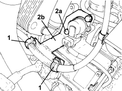
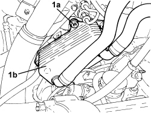
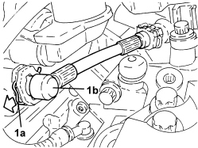
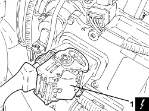
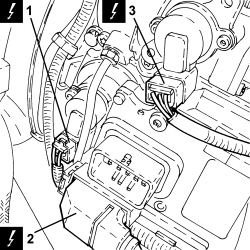
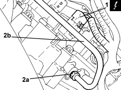
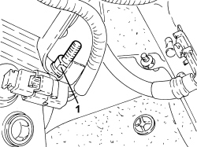
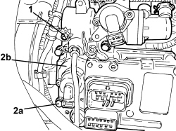
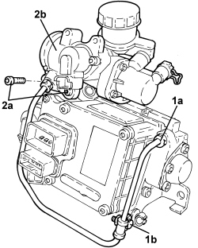

2127C40 HYDRAULIC SPEED SELECTION HYDRAULIC ACTUATOR UNIT AND CLUTCH - R.R.
- Path
- Procedures > 21 GEARBOX UNIT > 2127 ELECTRO-HYDRAULIC SELECTION GEARBOX EXTERNAL CONTROLS > 2127C HYDRAULIC GEAR SELECTION SYSTEM > 2127C40 HYDRAULIC SPEED SELECTION HYDRAULIC ACTUATOR UNIT AND CLUTCH - R.R.
- Kind
- repair procedure (removal / refitting; the operation number is the code)
- Applies to
- engines: 2.2 JTS; all production periods
- Interactive page
- https://sloeber94.github.io/elrnDB-aBrrSpdr/en/#/946004307
Applies to: engines: 2.2 JTS; all production periods
 Removing
Removing
 Refitting
Refitting- Position the vehicle on a lift.
- Place the gear lever in N.
- Connect an Examiner and run the depressurization procedure.
Applies to: engines: 2.2 JTS; all production periods
1. Open the starter motor supply lead retaining clips.
2. Undo the bolts (2a) and remove the wiring mounting bracket (2b).

Applies to: engines: 2.2 JTS; all production periods
1. Unscrew the bolts (1a) securing the engine oil heat exchanger (1b) and move it aside complete with pipes.

Applies to: engines: 2.2 JTS; all production periods
Op. 2127C22 PIPE FROM HYDRAULIC SPEED SELECTION ACTUATOR UNIT TO FLUID RESERVOIR - R.R.
1. Retract the clip (1a) and disconnect the pipe from the master cylinder to the three-way connector (1b), master cylinder side.

Applies to: engines: 2.2 JTS; all production periods
1. Disconnect the electrical connection for the electronic control unit.
Description | Connector | |
|---|---|---|
1 | Robotized gearbox control unit |

Applies to: engines: 2.2 JTS; all production periods
1. Disconnect the electrical connection for the gear selector position potentiometer.
Description | Connector | |
|---|---|---|
1 | Gear selector potentiometer |
2. Disconnect the remaining electrical connection for the electronic control unit.
Description | Connector | |
|---|---|---|
2 | Robotized gearbox control unit |
3. Disconnect the electrical connection for the clutch position sensor.
Description | Connector | |
|---|---|---|
3 | Clutch position potentiometer |

Applies to: engines: 2.2 JTS; all production periods
1. Disconnect the electrical connection for the gear engagement position sensor.
Description | Connector | |
|---|---|---|
1 | Gear engagement potentiometer |
2. Undo the connector (2a) for the fluid supply pipe to the valve assembly (2b), valve assembly side.

Applies to: engines: 2.2 JTS; all production periods
1. Undo the bolt with the double shank fixing the hydraulic unit mounting bracket.

Applies to: engines: 2.2 JTS; all production periods
1. Undo the bolt fixing the intermediate bracket for the rigid oil supply pipe to the valve assembly.
2. Undo the bolts (2a) and remove the hydraulic unit assembly (2b).

Applies to: engines: 2.2 JTS; all production periods
1. Undo the connector (1a) for the rigid pipe from the valve assembly to the master cylinder and the bolt (1b) fixing the mounting bracket.
2. Undo the bolts (2a) and remove the master cylinder assembly (2b).

Applies to: engines: 2.2 JTS; all production periods
Refitting
Removing- Place the master cylinder assembly in position and secure it tightening the bolts to the recommended torque.
Component | Fastening | dia | Value (daNm) | Validity |
|---|---|---|---|---|
Master cylinder | Bolt | - | 1.0 | 2.2 JTS |
- Tighten the connector for the rigid pipe from the valve assembly to the master cylinder and the bolt fixing the intermediate bracket.
1. Check the alignment of the gear engagement forks on the gearbox.

Applies to: engines: 2.2 JTS; all production periods
1. Check that the position of the selectors on the hydraulic unit corresponds with the diagram.

Applies to: engines: 2.2 JTS; all production periods
- Place the hydraulic unit assembly in position and tighten the bolts.
- Tighten the bolt fixing the intermediate bracket for the rigid oil supply pipe to the valve assembly.
Component | Fastening | dia | Value (daNm) | Validity |
|---|---|---|---|---|
Rigid oil supply pipe intermediate bracket | Bolt | - | 0.9 ÷ 1.1 | 2.2 JTS |
- Tighten the connector for the rigid pipe from the valve assembly to the master cylinder, master cylinder side.
Component | Fastening | dia | Value (daNm) | Validity |
|---|---|---|---|---|
Rigid pipe from valve assembly to master cylinder - master cylinder side | Connector | - | 1.3 ÷ 1.5 | 2.2 JTS |
- Tighten the connector for the rigid pipe from the valve assembly to the master cylinder, valve assembly side.
Component | Fastening | dia | Value (daNm) | Validity |
|---|---|---|---|---|
Rigid pipe from valve assembly to master cylinder - valve assembly side | Connector | M14 | 1.7 ÷ 1.9 | 2.2 JTS |
- Tighten the bolt with the double shank fixing the hydraulic unit mounting bracket.
- Connect the electrical connection for the clutch position sensor.
- Connect the electrical connection for the gear engagement position sensor.
- Connect the electrical connection for the gear selector position potentiometer.
- Connect the pipe from the master cylinder to the three-way connector, master cylinder side and close the clip.
Op. 2127C22 PIPE FROM HYDRAULIC SPEED SELECTION ACTUATOR UNIT TO FLUID RESERVOIR - R.R.
- Connect the electrical connections for the engine management control unit.
- Place the engine oil heat exchanger complete with pipes in its housing and secure it to the mounting bracket using the bolts.
- Place the wiring mounting bracket in its housing and secure it using the bolts.
- Position the starter motor supply lead and secure it using the retaining clips.
Op. 5530B52 BATTERY SUPPORT/DRIP TRAY - R.R
Op. 7055B54 UNDER ENGINE PROTECTION/GUARD - R.R.
Op. 0010T60 ELECTROHYDRAULIC SELECTION GEARBOX CLUTCH HYDRAULIC SYSTEM - BLEED AIR
Op. 0010T61 ELECTROHYDRAULIC SELECTION GEARBOX CLUTCH FLUID - CHECK LEVEL AND TOP UP IF NECESSARY
Op. 0010T11 ENGINE OIL - CHECK LEVEL AND TOP UP, IF NECESSARY
- Carry out the following procedures using the Examiner:
- clutch auto calibration enablement
- end of line service
- new actuators (only if the hydraulic activation unit is being replaced).
- Remove the vehicle from the lift.
Topics linked from this page (11)
- 0010T11 ENGINE OIL - CHECK LEVEL AND TOP UP, IF NECESSARY
- 0010T60 ELECTROHYDRAULIC SELECTION GEARBOX CLUTCH HYDRAULIC SYSTEM - BLEED AIR
- 0010T61 ELECTROHYDRAULIC SELECTION GEARBOX CLUTCH FLUID - CHECK LEVEL AND TOP UP IF NECESSARY
- 2127C22 PIPE FROM HYDRAULIC SPEED SELECTION ACTUATOR UNIT TO FLUID RESERVOIR - R.R.
- 5530B10 BATTERY - R+R
- 5530B52 BATTERY SUPPORT/DRIP TRAY - R.R
- 7055B54 UNDER ENGINE PROTECTION/GUARD - R.R.
- K068 SPEED SELECTION POTENTIOMETER
- K069 GEAR ENGAGEMENT POTENTIOMETER
- K095 CLUTCH POSITION POTENTIOMETER
- M054 ROBOTIZED TRANSMISSION CONTROL UNIT
Topics that link to this page (9)
- 1004B24 POWER UNIT WITH MANUAL GEARBOX WITH HYDRAULIC SELECTION - R.R.
- 1020D36 FLYWHEEL SIDE OIL SEAL - REPLACE FOR MANUAL GEARBOX WITH HYDRAULIC SELECTION VERSIONS
- 1024B11 ENGINE FLYWHEEL - R.R. FOR MANUAL GEARBOX WITH HYDRAULIC SELECTION VERSIONS
- 1810A28 CLUTCH - R.R. FOR MANUAL GEARBOX WITH HYDRAULIC SELECTION VERSIONS
- 2110A11 MANUAL GEARBOX WITH DIFFERENTIAL - R.R. FOR VERSIONS WITH HYDRAULIC SELECTION
- 2127C52 ODD AND EVEN GEAR ENGAGEMENT SOLENOIDS - R.R.
- 2127C54 GEAR SELECTION SOLENOIDS - R.R.
- 2127C56 CLUTCH CONTROL SOLENOID - R.R.
- 2127E50 HYDRAULIC SELECTION GEARBOX CIRCUIT PRESSURE SENSOR - R.R.